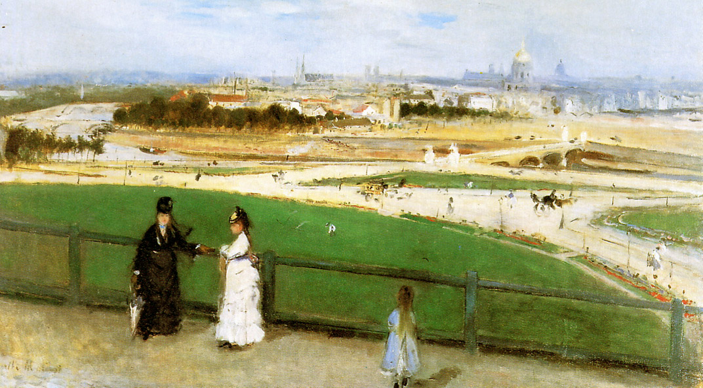

Tags: houses-and-buildings, roads-and-vehicles
Style: Impressionism
Artist: Morisot Berthe
Title: View of Paris from the Trocadero
Year: 1872
Genre: genre painting
Categories: fountain (32.3%); wreck (14.5%); lakeside (12.2%); geyser (4.9%); breakwater (4.2%)